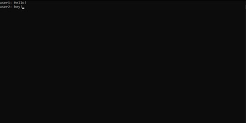
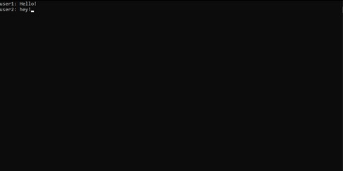

Personal Info
Hi, my name is Baran Emre Uysal, and i'm Turkish, I speak a medium amount, but understand a fair bit more. I am fresh out of highschool and studying First year in bachelors of IT. My birthday is on Feb 5th 2003, which means i'm 18. I graduated from Westall secondary college as school captain, and it was a pretty fun year. The hobbies I have are gaming, coding, sleeping and eating. I play mostly league of legends, which is ruining my life, but I’m always keen to try new games. I know the bare minimum on coding, but I find it interesting and fun
What is your interest in IT?
I am interested in the security side of IT, I love the idea of pushing technology to the limits. I am fascinated by ransomware and how things spread, how people get into massive data servers and protecting your self from all these things. My interests for IT began when I was a wee lad and got my first laptop back in 2013. I had no idea what I was doing with it and just pumped it with adware and such to the point where it was so slow. My methodology for fixing it was to just factory reset, and I mean, it did work, but I had to redownload everything. Slowly as I aged i kept using computers and became more and more handy with them. If I ran into a problem, I wanted to fix it myself. I chose to go to RMIT due to the exceptional learning facilities and curriculum provided for students regarding technology. Also just wanted a change of place, been hanging around clayton my whole life. I expect to learn the basics of coding in some languages and some other useful tips that will help me get a job.
Ideal Job
This job, cyber security specialist, would be a dream job for me as the person who can fit this role of work requires a deep understanding of security. they understand how things work and how things can be broken down, and how to avoid things from going south The position advertised is a government client, most likely requiring the worker to keep quiet about what they do, which sounds awesome. Having a job where u cant tell people what you do? Sign me up. It pays well and can allow access to higher ranks from the department, getting paid even more. Some skills i have now are the bare bone basics of Linux, an understanding of networks and network systems, a passion for computers and secuity, and a decent understanding of security. Nowhere near the level they ask for here. My goal to get to the necessary skills to be hired for a job like this is to learn from my course, take every security elective offered, and if there are none left, take software development courses. After my course I will search for graduate level jobs in security, and gain experience from there.
Personal Profile
What do the results of these tests mean for you?
They don't really mean much, you can't scientifically read someone's personality. These test results are a very brief understanding of someone, but not exactly who I am. So I don't care much for them.
How do you think these results may influence your behavior in a team?
I think my 16 personalities test is a bit off with the introverted part, I tend to take leadership roles when I can, so I believe they wont really change my behaviour at all in team-based programs.
How should you take this into account when forming a team?
I'll just make sure to make teams with people I connect with and have things in common with, such as gaming or other hobbies, and proceed from there.
Project Idea
My project idea is a private chat messaging service that uses a command line. The server for the chat room will be hosted on one of the user's computers. It will keep no chat logs of the messages, and make sure nothing is kept. Removing the "middleman", that being the server host such as discord or snapchat, from being able to see and keep messages.
The reason this will be useful is since all our data is being stored 24/7, it's nearly impossible to have a private conversation that may have some private data. Although your ISP will be able to see the packets, if you were sending important credentials, you'd rather there be no logs kept of the incident.
The application will use command line to look cooler, but a UI is totally acceptable. It will be port forwarded from one of the user’s computer and require a server application so that both users can connect and send messages to each other. No chat logs will be kept. Users will require a username before entering the chat, however the username means nothing, just a way of expressing oneself. Only one user will be required to have the server open, and the server can run on anything. Like a Minecraft server. If the server is closed the chat will not work. Allowing for the chat room to be opened when required. The one-on-one chat room allows for user’s privacy at the touch of their fingertips.
 

The tools and technologies required consist of a coding language able to transfer packets between a server and client and a valid internet connection. A python library under the name “socket” could be used, as python is an easy language. However more complicated languages could be used to make a more sophisticated application.
The skills needed are, coding and port forwarding. Coding to code the actual server and client, and port forwading the bind the server to your IP and allow for users to connect to the server.
If the project is successful it will provide a safe and secure space for private information to be shared amongst friends. Allowing the user to be at ease when transfering sensitive data to their friends or family.